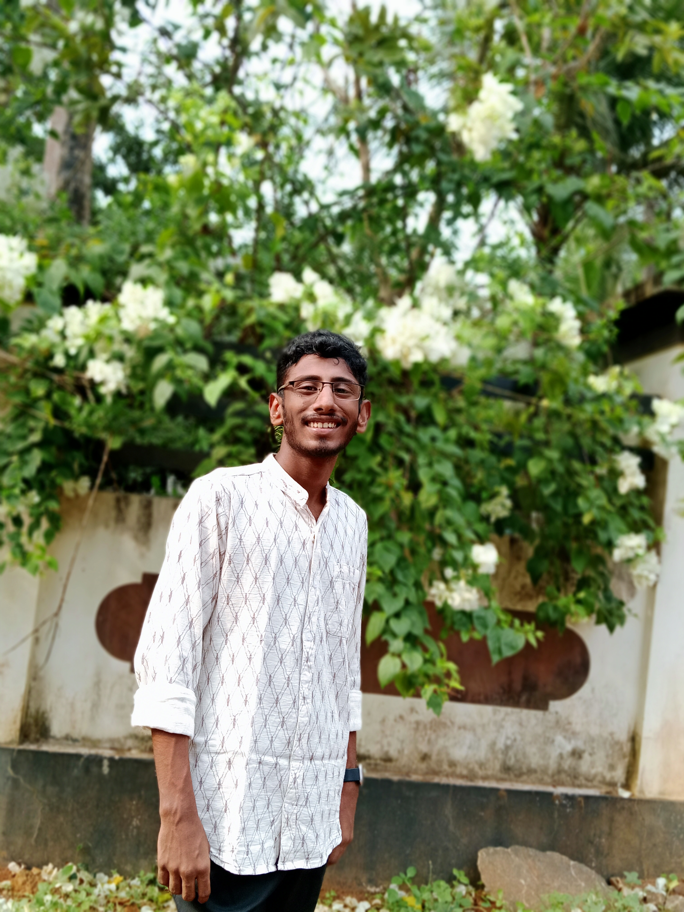
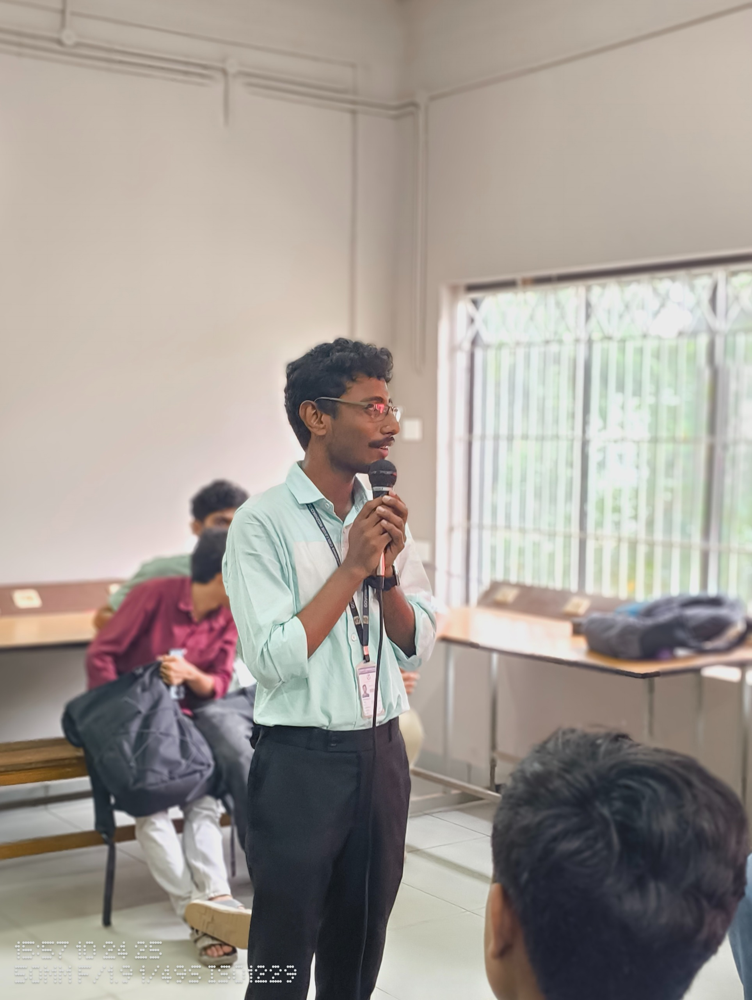

Vimal John M V
Electronics & Communication student at GECK | IoT Developer | Campus Lead at MuLearn
About Me
I am an Electronics & Communication student at GEC Kozhikode driven by a curiosity for how things work. My focus lies at the intersection of Internet of Things (IoT) and Machine Learning, where I enjoy creating systems that can sense, learn and adapt. I am constantly looking for new challenges to test my techincal skills. Outside of the lab, I unplug by cookig or relaxing with a book.

Projects & Experience
Engineering Solutions for the Real World. I believe technology is best used to solve actual problems. As an ECE student at GECK, I apply concepts from IoT and ML to create efficient, automated systems. Here, you will find projects where I’ve tackled challenges in connectivity, data analysis, and system design.
Community & Leadership
2024 - Present
MuLearn
Career Progression (Click to expand)
Present
Campus Lead
Spearheading the campus chapter, orchestrating technical events, and fostering a culture of peer-to-peer learning and skill development.
2024 - 2025
Content Lead
Bridged the gap between technology and storytelling by managing the chapter’s digital presence and documenting key events.
2024 - Present
Learner
Began my journey by participating in study groups, completing task-based learning, and upskilling in core technologies.
2024 - Present
IEEE SB GECK
Career Progression (Click to expand)
Present
Vice Chairperson
Co-leading student branch operations, planning strategic technical initiatives, and guiding various society chapters.
2024 - Present
Active Volunteer
Facilitated technical workshops and collaborated with peers to foster an environment of shared learning.
2025 - Present
IEEE Sensors Council
Career Progression (Click to expand)
Present
EA Coordinator
Coordinating Educational Activities (EA) to bridge the gap between theoretical concepts and practical applications in sensor technologies.
2025
Member
Active participant in council activities, engaging in technical discussions and sensor technology workshops.
2025 - Present
Heartitude Foundation
Career Progression (Click to expand)
Present
Intern (Pedagogy Lead)
Leading syllabus development and pedagogical strategies as part of the Minds and Machines initiative.
Previous
Volunteer Educator (Ignis 2.0)
Conducted classes and collaborated with Heartitude during IEEE SB GECK's Ignis 2.0, sparking my journey into the foundation.
Education & Technical
Ongoing
IoT Developer
Independent ProjectsDesigning and building smart, connected hardware systems using microcontrollers like ESP32 and Arduino.
2021 - Present
Electronics & Communication Student
GEC KozhikodeGaining foundational and practical knowledge in signal processing, circuitry, and embedded systems.
Event: Upside Down - Into the Unknown
Organized a Stranger Things-themed engagement event for MuLearn. The highlight was an interactive installation inspired by Joyce Byers' wall from Season 1. Participants collaborated to generate "Watts" (Karma points), which lit up a string of Christmas lights in real-time. This gamified approach successfully drove high community participation and team spirit.

{kind=link}
{kind=link}
{kind=link}
{kind=link}
{kind=link}
{kind=link}
{kind=link}
{kind=link}
Technical Projects
My work sits at the intersection of electronics and artificial intelligence. From designing circuit boards to training machine learning models, I enjoy every step of the engineering process.
{kind=link}
{kind=link}
Techincal Skills
Get in touch
Have a project in mind or want to collaborate? Feel free to reach out!
© Vimal John M V. All rights reserved.